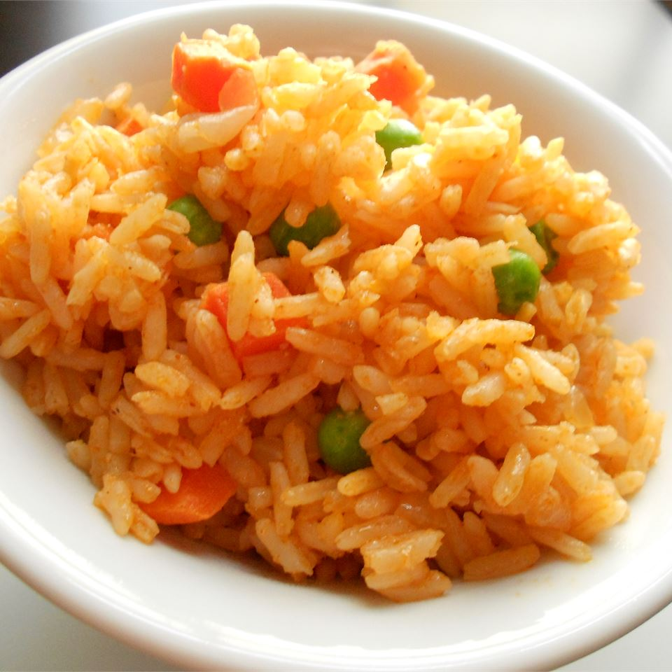

Quick And Easy Spanish Rice

Description
This recipe is a simple Spanish rice that is quick and easy and tastes delicious.
The vegetable juice and the taco seasoining add more flavor to this dish.
Ingredients
- 1/4 cup chopped onion
- 2 cloves garlic, minced
- 2 tablespoons vegetable oil
- 3 cups uncooked instant rice (such as Minute)
- 2 1/4 cups chicken broth
- 1 cup vegetable juice (such as V8)
- 1 1/2 teaspoons taco seasoning
Steps
- Cook and stir onion, garlic, and vegetable oil in a skillet over medium heat until onions are softened, about 5 minutes.
- Stir rice into onion mixture and cook, stirring often, until rice becomes slightly opaque, 1 to 2 minutes.
- Stir chicken broth, vegetable ju ice, and taco seasoning into rice mixture and bring to a boil. Cover and simmer over low heat until rice has absorbed most of the liquid, about 5 minutes.